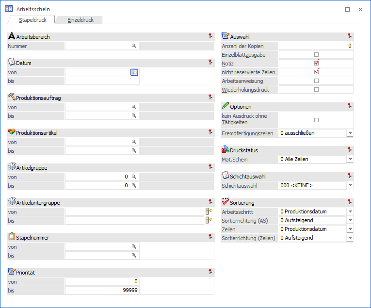
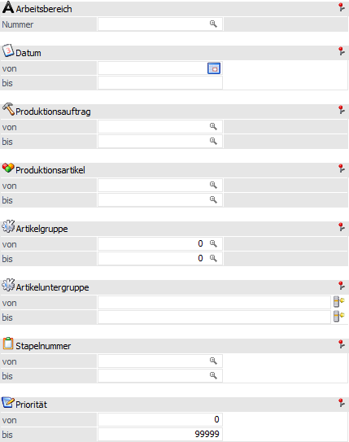
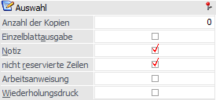
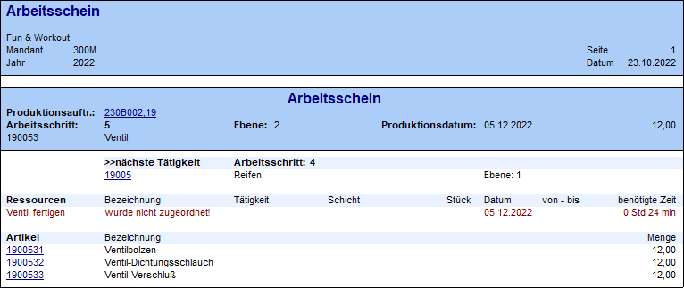
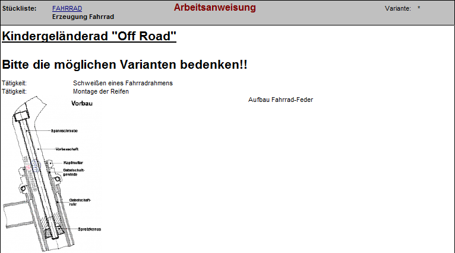
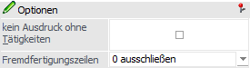
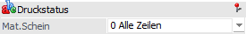
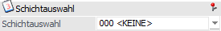

In dem Register "Stapeldruck" des Arbeitsscheins können Arbeitsscheine für noch nicht abgeschlossene Produktionsaufträge gedruckt werden. Es werden dabei immer alle offenen Arbeitsschritte eines Auftrags berücksichtigt.
Hinweis
Wenn der Arbeitsschein nur für einen speziellen Arbeitsschritt eines Produktionsauftrags erzeugt werden soll, dann muss der Druck im Register "Einzeldruck" erfolgen.

Folgende Eingabefelder, Einstellungen und Informationen stehen zur Verfügung:
Selektion

Ø Arbeitsbereich
An dieser Stelle kann ein zuvor definierter Arbeitsbereich hinterlegt werden.
Hinweis
Mit Hilfe des Arbeitsbereichs können gewisse Einschränkungen, wie z.B. Produktionsauftrag und Produktionsartikel, automatisch vorbelegt werden.
Ø Datum
An dieser Stelle kann auf das Produktionsdatum der einzelnen Arbeitsschritte eingegrenzt werden. Es werden nachfolgend nur Arbeitsscheine zu den Arbeitsschritten erzeugt, in deren Zeitraum dieses Datum liegt.
Beispiel
Der Produktionsauftrag "25464" besteht aus 3 Arbeitsschritten. Das Produktionsdatum des Arbeitsschritts 1 (Fertigprodukt) ist der 07.11.2022, die Arbeitsschritte 2 und 3 (jeweils Halbfertigprodukt) werden bereits am 04.11.2022 produziert.
Wenn nun eine Datumseingrenzung vom 01.11.2022 bis zum 04.11.2022 vorgenommen wird, dann beinhaltet der Arbeitsscheine nur die Komponenten und Ressourcen der Arbeitsschritte 2 und 3.
Ø Produktionsauftrag
An dieser Stelle kann auf Produktionsaufträge eingegrenzt werden. Es werden nachfolgend nur Arbeitsscheine zu diesen hinterlegten Produktionsaufträgen erzeugt.
Ø Produktionsartikel
An dieser Stelle kann auf Produktionsartikel eingegrenzt werden. Es werden nachfolgend nur Arbeitsscheine für die Arbeitsschritte dieser Produktionsartikel erzeugt.
Hinweis
Wird im Feld "Produktionsartikel von / bis" z.B. nur eine Artikelnummer eingegeben und dieser Artikel hat auch noch Ausprägungen, so werden alle Ausprägungen automatisch berücksichtigt. Nur wenn während des Anklickens des entsprechenden "Ausgabe"-Buttons die STRG-Taste gedrückt wird, wird nur der Hauptartikel alleine ausgewertet.
Ø Artikelgruppe
An dieser Stelle kann auf Artikelgruppen eingegrenzt werden. Es werden nachfolgend nur Arbeitsscheine für die Arbeitsschritte der Produktionsartikel erzeugt, welche diese Artikelgruppe im Artikelstamm hinterlegt haben.
Ø Artikeluntergruppen
An dieser Stelle kann auf Artikeluntergruppen eingegrenzt werden. Es werden nachfolgend nur Arbeitsscheine für die Arbeitsschritte der Produktionsartikel erzeugt, welche diese Artikeluntergruppe im Artikelstamm hinterlegt haben.
Ø Stapelnummer
An dieser Stelle kann auf Stapelnummern eingegrenzt werden. Es werden nachfolgend nur Arbeitsscheine für die Produktionsaufträge erzeugt, welche eine dieser Stapelnummern hinterlegt haben.
Ø Priorität
An dieser Stelle kann eine Eingrenzung aufgrund der Priorität vorgenommen werden. Es werden nachfolgend nur Arbeitsscheine für die Produktionsaufträge erzeugt, welche innerhalb der eingrenzten Priorität liegen.
Auswahl

In diesem Bereich können diverse Einstellungen für die Druckausgabe getroffen werden. Eine Vorbesetzung kann dabei über die PPS-Parameter (Bereich "Ausgabe", Optionen von "Vorbesetzungen Arbeitsschein") definiert werden.
Ø Anzahl Kopien
An dieser Stelle kann hinterlegt werden, wie viel Kopien des Arbeitsscheins (neben dem Original) gedruckt werden sollen.
Hinweis
Für die Gestaltung der Kopien stehen die Flags 1 bis 9 zur Verfügung (1 bis 9 = Kopie 1 bis 9). D.h. der Arbeitsschein kann inklusive des Originals in 10 verschiedenen Varianten gedruckt werden, welche vom betreuenden Händler individuell angepasst werden können.
Ø Einzelblattausgabe
Durch die Aktivierung dieser Checkbox kann eingestellt werden, dass pro Arbeitsschritt ein einzelner Arbeitsschein erstellt wird.
Ø Notiz
Durch die Aktivierung dieser Checkbox werden die Notizen, welche bei den einzelnen Produktionsartikeln (Halbfertig- und Fertigprodukte) hinterlegt wurden (manuell oder automatisch), ebenfalls ausgegeben.
Hinweis
Die Notiz des Fertigprodukts wird bei der Anlage eines Produktionsauftrags automatisch mit dem Notiz-Text der Stückliste gefüllt. Eine nachträgliche Änderung kann z.B. im Programm Arbeitsschrittstatus vorgenommen werden.
Die Notiz der Halbfertigprodukte wird auch automatisch bei der Auftragsanlage befüllt. Hier stammt der Notiztext aus der Spalte "Text" der Komponententabelle des Stücklistenstamms. Eine Änderung des Texts kann z.B. über das Programm Produktionskorrektur erfolgen.
Ø nicht reservierte Zeilen
Durch die Aktivierung dieser Checkbox werden auch noch nicht eingeplante Tätigkeiten auf dem Arbeitsschein bei den einzelnen Arbeitsschritten ausgewiesen.
Beispiel

Ø Arbeitsanweisung
Wenn dieses Checkbox aktiviert wird, dann werden neben den Informationen zu den jeweiligen Arbeitsschritten auch die Archivdokumente aus dem Register "Arbeitsanweisung" des Stücklistenstamms angedruckt.
Beispiel

Ø Wiederholungsdruck
Der Arbeitsschein kann im Original nur einmalig gedruckt werden. Wird dieser zu einem späteren Zeitpunkt ein weiteres Mal benötigt, so muss die Checkbox "Wiederholungsdruck" aktiviert werden.
Optionen

Ø kein Ausdruck ohne Tätigkeit
Durch die Aktivierung dieser Checkbox werden Arbeitsscheine nur für Arbeitsschritte erzeugt, in denen auch eine eingeplante Tätigkeit vorhanden ist.
Beispiel
Bei aktivierter Checkbox würde der Arbeitsschritt 5 aus dem Beispiel der Option "nicht reservierte Zeilen" nicht gedruckt werden.
Ø Fremdfertigungszeilen
Mit Hilfe dieser Option wird signalisiert, dass Fremdfertigungszeilen generell im Arbeitsschein nicht berücksichtigt werden. Somit steht auch nur die Auswahl "0 - ausschließen" zur Verfügung.
Druckstatus

Ø Mat.Schein
Mit den folgenden Optionen können Produktionsaufträge nach dem Druckstatus des Materialentnahmescheines selektiert werden:
ü 0 - Alle Zeilen
Arbeitsscheine
werden für Produktionsaufträge unabhängig vom Druckstatus des
Materialentnahmescheins ausgegeben.
ü 1 - muss gedruckt
sein
Arbeitsscheine werden nur für jene Produktionsaufträge ausgegeben, für
die bereits ein Materialentnahmeschein gedruckt wurde.
ü 2 - darf nicht gedruckt
sein
Arbeitsscheine werden nur für jene Produktionsaufträge werden
ausgegeben, für welche noch kein Materialentnahmeschein gedruckt wurde.
Hinweis
Über die Option "Materialentnahmeschein" in den PPS-Parametern (Bereich "Ausgabe") kann die Selektion in diesem Feld vorbesetzt werden.

Ø Schichtauswahl
An dieser Stelle kann auf eine bestimmte Schicht eingegrenzt werden. Es werden nachfolgend nur für die Arbeitsschritte ein Arbeitsschein erstellt, in welchen Ressourcen bzw. Ressourcengruppen (über eine entsprechende Tätigkeit) der ausgewählten Schicht eingeplant wurden.
Achtung
Wenn ein Arbeitsschein für eine spezielle Schicht erzeugt werden soll, dann werden die benötigten Komponenten immer aufgerundet (außer bei dem letzten Arbeitsschein).
Beispiel
Von dem Produktionsartikel "10007" (Kindergeländerad "Off Road") sollen 10 Stk. in 3 Schichten produziert werden, wobei pro Schicht 3 1/3 Fahrräder gefertigt werden können.
Bei dem Arbeitsschein der ersten und zweiten Schicht würden die Komponenten von jeweils 4 Fahrrädern ausgewiesen werden, auf dem Arbeitsschein der dritten Schicht die Materialien für 3 Fahrräder.
Voraussetzung
Als Auswertungstyp muss in den verwendeten Ressourcen bzw. Ressourcengruppen (Option "Anzeige in Auswert.") die Variante "1 - nur wenn selektiert" verwendet werden.
War zum dem Zeitpunkt der Auftragsanlage nicht der korrekte Auswertungstyp hinterlegt, dann muss der Produktionsauftrag gelöscht und neu erfasst werden.
Sortierung

Ø Sortierungsfeld (Arbeitsschritt / Zeilen)
In diesen Feldern kann eingestellt werden, nach welchem Kriterium die Arbeitsschritte bzw. die Zeilen in den Schritten sortiert werden sollen. Folgende Möglichkeiten stehen dabei zur Verfügung:
ü 0 - Produktionsdatum
ü 1 - Artikelnummer
ü 2 - Produktionsauftrag
ü 3 - Lagerplatz
ü 4 - Ausprägung 1
ü 5 - Ausprägung 2
ü 6 - Priorität
ü 7 - Positionsnummer
ü 8 - Positionstext
Ø Sortierrichtung (AS / Zeilen)
An dieser Stelle kann die Sortierrichtung für das jeweilige Sortierungsfeld eingestellt werden. Folgende Möglichkeiten stehen dabei zur Verfügung:
ü 0 - Aussteigend
ü 1 - Absteigend